Empire Stone × Empire Granite — QA
Golden Path — Block: ซื้อ รับ เก็บเงิน แก้ขนาด ตัด คืน และขายทั้งก้อน
อัปเดตล่าสุด: 11 ตุลาคม 2569 (2026-10-11) · ระบบ stone_slab_inventory เวอร์ชัน 19.0.2.109.11
เรื่องราวของ Block อีกด้านหนึ่ง: สั่งซื้อเป็นตัน → รับของกรอกขนาดรายก้อน → ดู Block → บิลผู้ขายตามที่รับจริง → แก้ขนาดที่วัดผิด → ตัดเป็นแผ่น (Cut Order) → คืน Block ให้ผู้ขาย · รันจริงโดยผู้ใช้บน eg-tst เมื่อ 11 ต.ค. 2569
11Test Case ทั้งหมด
7หมวด
10High Priority
1Medium Priority
0Low Priority
A. สั่งซื้อ Block (Purchase)
ซื้อเป็นตัน — ระบบแปลงเป็นลูกบาศก์เมตรให้เอง · 1 test case
| TC ID | Scenario | Precondition | Steps | ข้อมูลตัวอย่าง | Expected Result | Priority | ภาพหน้าจอ |
|---|---|---|---|---|---|---|---|
| TC-GP-BPC-01 | สร้างใบสั่งซื้อ (PO) Block เป็นตัน แล้ว Confirm ช่อง "จำนวน" บน PO คือปริมาณโดยประมาณที่สั่ง ไม่ใช่จำนวนก้อน ขนาดจริงของแต่ละก้อนจะกรอกตอนรับของ · ✅ ตัวเลขตันที่หาร 2.7 ไม่ลงตัว (เช่น 10 ตัน) เคยแสดงเพี้ยนเป็น 9.99 ตัน แก้แล้ว (11 ต.ค. 2569) แต่ยอดเงินอาจต่างประมาณ 0.10 บาท จึงใช้ตันที่หาร 2.7 ลงตัวในตัวอย่าง |
เข้าระบบเป็น Empire Granite ได้แล้ว · มีผู้ขายและหินชนิดดำชานตง (SHANDONG BLACK) พร้อมสินค้า Block ในระบบ |
|
Vendor = A-Test-Vender Qty (Ton) = 37.80 Unit Price = 27,000 บาท ต่อ ลบ.ม. |
PO ขึ้นสถานะ Purchase Order — Quantity 14.00 ลบ.ม., Price / Ton 10,000.00, ยอดก่อน VAT 378,000.00 บาท และมีปุ่มสมาร์ท Receipt 1 ใบ (ตัวอย่างจริง P00086) | High | 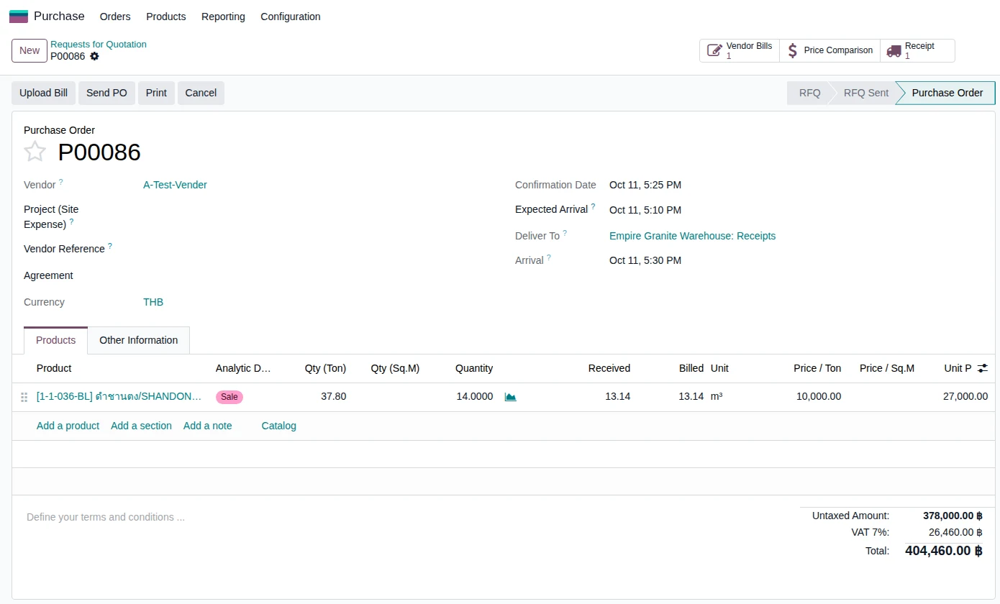 |
B. รับ Block เข้าคลัง (Receipt)
1 แถว = 1 ก้อนจริง กรอกขนาดแล้ว Validate ระบบสร้างเอกสาร Block ให้เอง · 2 test cases
| TC ID | Scenario | Precondition | Steps | ข้อมูลตัวอย่าง | Expected Result | Priority | ภาพหน้าจอ |
|---|---|---|---|---|---|---|---|
| TC-GP-BPC-02 | รับ Block 2 ก้อน กรอกขนาดรายก้อน แล้ว Validate รับน้อยกว่าที่สั่ง (13.14 จาก 14.00) ระบบถามเรื่อง Backorder ให้เลือก No Backorder เพราะผู้ขายส่งครบแล้ว · หลัง Validate มีข้อความมุมจอทีละก้อน (ปิดด้วยปุ่ม x ได้) |
ทำ TC-GP-BPC-01 เสร็จแล้ว |
|
ก้อนที่ 1 = 2.90 × 1.60 × 1.50 ม. ก้อนที่ 2 = 2.75 × 1.55 × 1.45 ม. |
ใบรับของเป็น Done — ปลายทาง Stone Inventory/Stone Available, Quantity 13.14 ลบ.ม. (6.96 + 6.18), Qty (Ton) 35.48 ระบบสร้าง Block 2 เอกสาร: BLK-26-0029 (6.96 ลบ.ม.) และ BLK-26-0030 (6.18 ลบ.ม.) | High | 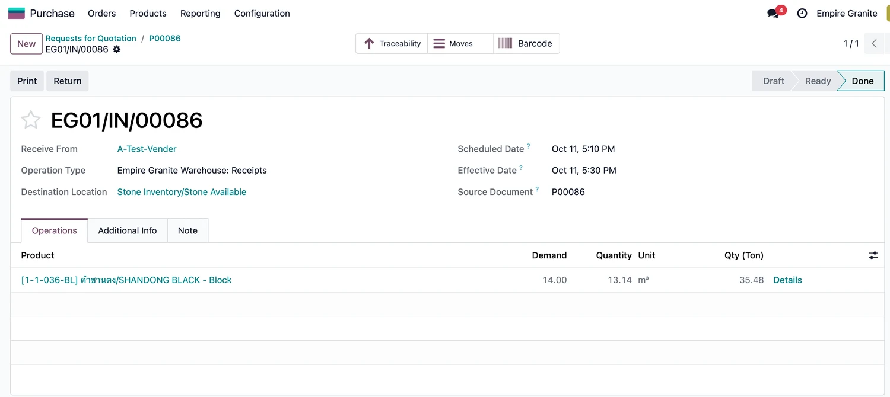 |
| TC-GP-BPC-03 | ดู Block ที่เพิ่งรับเข้าคลัง | ทำ TC-GP-BPC-02 เสร็จแล้ว |
|
- | การ์ดสรุปแสดง ขนาดก้อน 2.90 × 1.60 × 1.50 = 6.96 CBM · 18.79 ตัน, คงเหลือ 6.96 CBM, ราคาขายเป็นบาท/ตัน, ผลการตัด "ยังไม่ได้ตัด" พร้อมจำนวนแผ่นโดยประมาณ, ต้นทุน 10,000 บาท/ตัน และเลข PO (P00086) ช่องขนาดเป็นสีเทา แก้ตรงๆ ไม่ได้ | Medium | 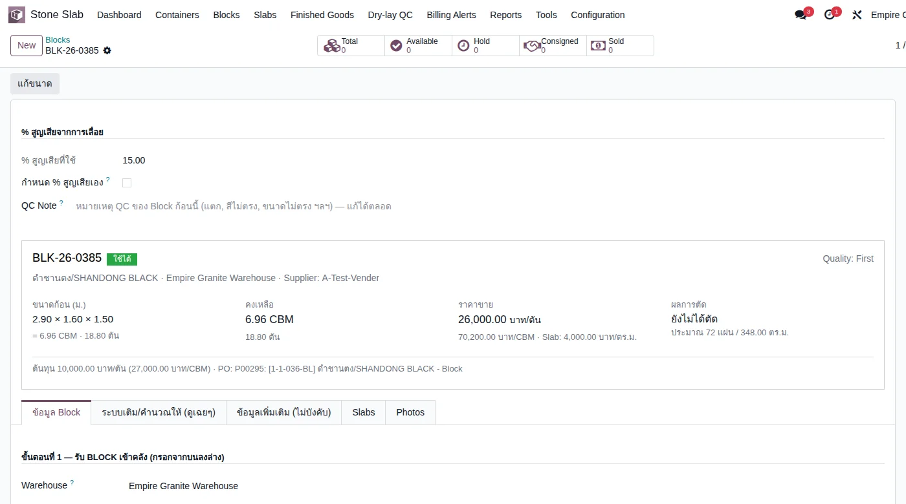 |
C. เก็บเงิน (Vendor Bill)
บิลผู้ขายคิดตามที่รับจริง ไม่ใช่ตามที่สั่ง · 1 test case
| TC ID | Scenario | Precondition | Steps | ข้อมูลตัวอย่าง | Expected Result | Priority | ภาพหน้าจอ |
|---|---|---|---|---|---|---|---|
| TC-GP-BPC-04 | สร้างบิลผู้ขายจากใบสั่งซื้อ แล้ว Confirm บิลดึงปริมาณตามที่รับจริง (13.14) ไม่ใช่ที่สั่ง (14.00) · บรรทัดบิลแสดง Qty (Ton) หน้า Quantity และ Price / Ton หลัง Price (เพิ่ม 11 ต.ค. 2569) |
ทำ TC-GP-BPC-02 เสร็จแล้ว |
|
Vendor = A-Test-Vender Auto-Complete = P00086 |
บรรทัด Block: Qty (Ton) 35.48 · Quantity 13.14 ลบ.ม. · Price 27,000.00 · Price / Ton 10,000.00 · Amount 354,780.00 บาท ท้ายบิล VAT 7% 24,834.60, Total 379,614.60 บาท สถานะ Posted และมีปุ่ม Purchases P00086 ที่หัวบิล (ตัวอย่างจริง BILL/2026/10/0003) | High | 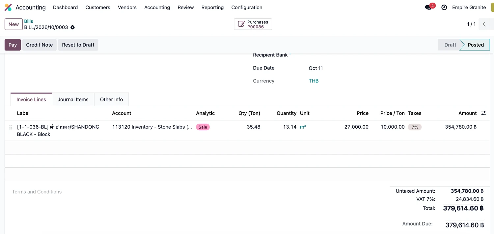 |
D. แก้ขนาด Block ที่วัดผิด
เฉพาะ Inventory Administrator · ต้องระบุเหตุผล · มีประวัติ · 1 test case
| TC ID | Scenario | Precondition | Steps | ข้อมูลตัวอย่าง | Expected Result | Priority | ภาพหน้าจอ |
|---|---|---|---|---|---|---|---|
| TC-GP-BPC-05 | แก้ความสูงของ Block ที่วัดผิด พร้อมเหตุผล บิลผู้ขายที่ Posted ไปแล้วไม่เปลี่ยน (ยังเป็น 13.14) เพราะคิดจากที่รับตอนรับของ |
ทำ TC-GP-BPC-02 เสร็จแล้ว · ผู้ใช้เป็น Inventory Administrator (ถ้าไม่เห็นปุ่ม แก้ขนาด แปลว่ายังไม่มีสิทธิ์) |
|
สูงใหม่ = 1.45 ม. (เดิม 1.50) เหตุผล = วัดซ้ำที่ลาน สูงจริง 1.45 ม. |
การ์ดสรุปเปลี่ยนเป็น 2.90 × 1.60 × 1.45 = 6.73 CBM · 18.17 ตัน คงเหลือ 6.73 CBM และมีแท็บ ประวัติแก้ขนาด (แท็บสุดท้าย) 1 แถว: สูง 1.500 → 1.450, ปริมาตร 6.96 → 6.73, ปรับสต็อก -0.23, เหตุผล และชื่อผู้แก้ | High | 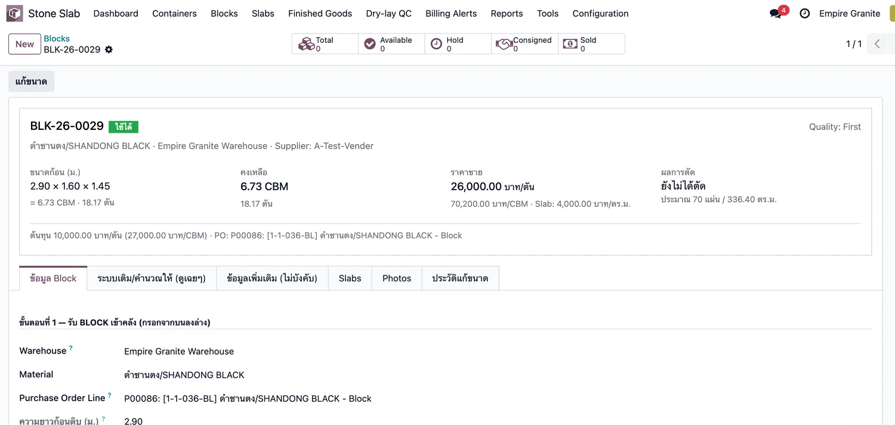 |
E. ตัด Block เป็นแผ่น (Cut Order)
สร้างใบตัด ย้าย Block ไปสถานีตัด Confirm และ Complete Cut ได้ Slab · 2 test cases
| TC ID | Scenario | Precondition | Steps | ข้อมูลตัวอย่าง | Expected Result | Priority | ภาพหน้าจอ |
|---|---|---|---|---|---|---|---|
| TC-GP-BPC-06 | สร้างใบตัดจาก Block (ผิวขัดมัน หนา 2 ซม.) จำนวนแผ่นที่ระบบคำนวณเป็นค่าสูงสุดตามทฤษฎี (ความกว้างก้อน ÷ ความหนา) ไม่หักเนื้อหินที่หายไปกับใบเลื่อย ของจริงอาจได้น้อยกว่า (รอตกลงกับลูกค้า) · ใบตัดไม่มี SO ต้องเลือกเหตุผลก่อน Confirm |
ทำ TC-GP-BPC-02 เสร็จแล้ว (ใช้ BLK-26-0030 ซึ่งยังไม่เคยตัด) |
|
Block = BLK-26-0030 ขนาดแผ่น = 2.75 × 1.45 ม. Finish = Polished · ความหนา = 2 cm เหตุผล = งานเพิ่ม (Extra work) |
ขึ้นการ์ดสรุป "ตัด Slab จาก Block": Block เหลือ 6.18 CBM, ขนาดเป้าหมาย 2.75 × 1.45, Polished หนา 0.02, ประมาณ 77 แผ่น / 307.04 ตร.ม., ผูกกับ งานเพิ่ม และข้อความสีเขียว "แผนใช้ 6.14 CBM พอ" (ตัวอย่างจริง EG01/STCUT/00047) | High | 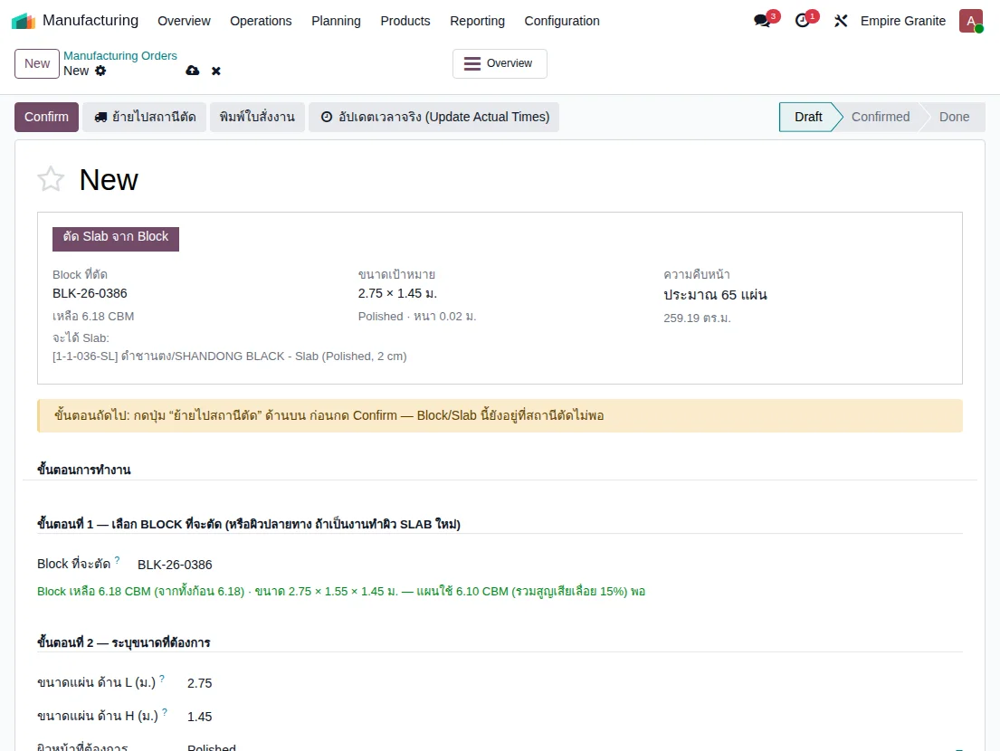 |
| TC-GP-BPC-07 | ย้าย Block ไปสถานีตัด แล้ว Confirm และ Complete Cut หลังกด ย้ายไปสถานีตัด แถบเหลืองเตือนอาจยังค้างอยู่ ให้รีเฟรชหน้า (บั๊กการแสดงผลที่จดไว้ ข้อมูลถูกต้อง) |
ทำ TC-GP-BPC-06 เสร็จแล้ว |
|
- | ใบตัดเป็น Done — ตัดได้จริง 77 แผ่น / 307.04 ตร.ม. (100% ของแผน), Block ใช้ 6.14 ลบ.ม. เหลือ 0.04 ลบ.ม., ได้ Lot ของแผ่น 77 ใบ (ปุ่ม Serial Numbers ขึ้น 77) อยู่ใน Stone Available | High | 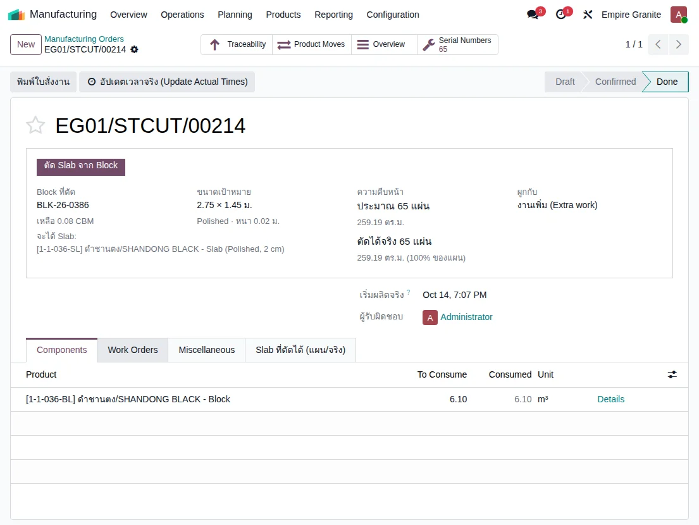 |
F. คืน Block ให้ผู้ขาย
ใบคืนจองก้อนเดิมให้เอง และเลือกก้อนอื่นไม่ได้ · 1 test case
| TC ID | Scenario | Precondition | Steps | ข้อมูลตัวอย่าง | Expected Result | Priority | ภาพหน้าจอ |
|---|---|---|---|---|---|---|---|
| TC-GP-BPC-08 | คืน Block ทั้งก้อนที่ได้รับผิดให้ผู้ขาย ✅ แก้แล้ว 11 ต.ค. 2569: ใบคืน Block ขึ้น Ready พร้อมก้อนเดิมให้เองและเลือกได้เฉพาะก้อนของใบรับของเดิม (ก่อนแก้ใบคืนค้าง Waiting ต้องเลือกก้อนและกรอกขนาดเอง) · คืนได้เฉพาะ Block ที่ยังไม่ถูกตัด Block ที่ตัดบางส่วนแล้วยังไม่ได้ทดลอง |
มี PO และใบรับของที่ Done ของ Block 1 ก้อนที่ยังไม่ถูกตัด (ทดสอบด้วย PO แยกต่างหาก ไม่ใช่ P00086) |
|
PO ทดสอบ = P00090 (Qty (Ton) 5.40 = 2.00 ลบ.ม. @ 27,000 ต่อ ลบ.ม.) Block = 2.00 × 1.00 × 1.00 ม. (BLK-26-0034) |
ใบคืน Done Quantity 2.00 ลบ.ม. (5.40 ตัน) · ช่อง Received ของ PO กลับเป็น 0.00 · เอกสาร Block ยังอยู่เป็นประวัติ ขึ้นป้าย "ใช้หมดแล้ว" คงเหลือ 0.00 CBM (ตัวอย่างจริง EG01/OUT/00102) | High | 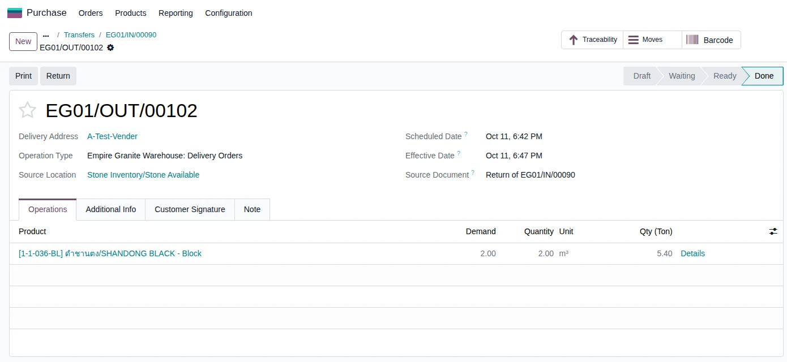 |
G. ขายทั้งก้อน (Sell Whole Block)
ขาย Block ทั้งก้อนให้ลูกค้า — ส่งของ ออกใบแจ้งหนี้ ระบบตัดต้นทุนให้ · 3 test cases
| TC ID | Scenario | Precondition | Steps | ข้อมูลตัวอย่าง | Expected Result | Priority | ภาพหน้าจอ |
|---|---|---|---|---|---|---|---|
| TC-GP-BPC-09 | สร้างใบสั่งขาย Block ทั้งก้อน Block ขายเป็นลูกบาศก์เมตร ช่อง Qty (Ton) อยู่หน้า Quantity ให้ดูน้ำหนักประกอบ · ขายสินค้า Block (ลงท้าย - Block) ไม่ใช่สินค้า FG · ขนาดที่ขายคือขนาดล่าสุดของก้อน (หลังแก้ขนาดแล้ว) |
ทำ TC-GP-BPC-05 เสร็จแล้ว (BLK-26-0029 แก้ขนาดเป็น 6.73 ลบ.ม.) และยังไม่ถูกขายหรือตัด · มีลูกค้าในระบบ |
|
Customer = Demo Hotel Customer Block = BLK-26-0029 Unit Price = 70,200 บาท ต่อ ลบ.ม. |
บรรทัดขายขึ้น Qty (Ton) 18.17, Quantity 6.73 ลบ.ม., ราคา 70,200 · ยอดก่อน VAT 472,446.00, VAT 7% 33,071.22 บาท · หลัง Confirm เป็น Sales Order และมีปุ่มสมาร์ท Delivery 1 ใบ (ตัวอย่างจริง S00209) | High | 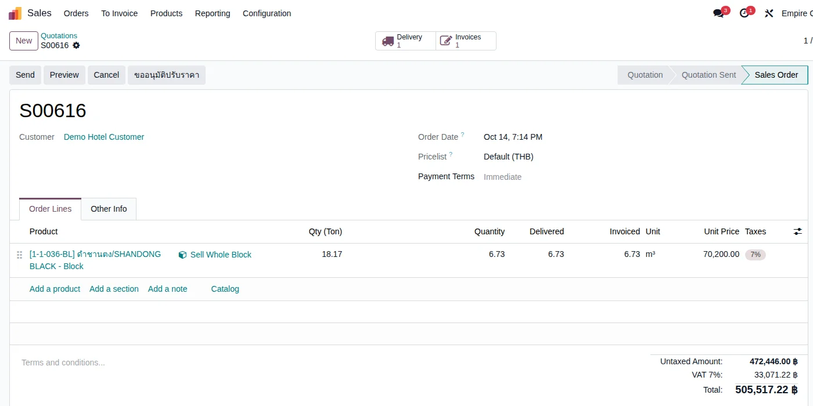 |
| TC-GP-BPC-10 | ส่งของ Block ทั้งก้อนให้ลูกค้า (Delivery) ใบส่งของจองก้อนที่เลือกไว้ให้เอง ไม่ต้องกรอกขนาดซ้ำ |
ทำ TC-GP-BPC-09 เสร็จแล้ว |
|
- | ใบส่งของ Done — Source Location Stone Inventory/Stone Available, Demand 6.73 = Quantity 6.73 ลบ.ม., Qty (Ton) 18.17 · BLK-26-0029 คงเหลือ 0.00 ลบ.ม. (ตัวอย่างจริง EG01/OUT/00103) | High | 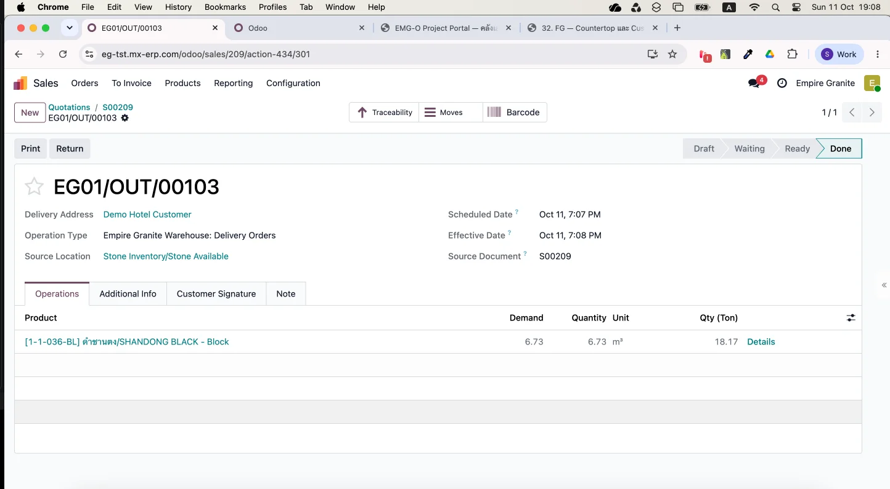 |
| TC-GP-BPC-11 | ออกใบแจ้งหนี้ลูกค้า และตรวจรายการบัญชี ต้นทุนขายมาจากราคาซื้อจริง 27,000 × 6.73 = 181,710 (ไม่ใช่ราคาขาย) · ฝ่ายบัญชีตรวจได้จากแท็บ Journal Items |
ทำ TC-GP-BPC-10 เสร็จแล้ว |
|
- | ใบแจ้งหนี้ Posted ยอดก่อน VAT 472,446.00, VAT 33,071.22, รวม 505,517.22 · Journal Items: Credit 411100 รายได้ 472,446.00, Credit 113120 สต็อก 181,710.00 คู่กับ Debit 511110 ต้นทุนขาย 181,710.00, Credit 213200 VAT 33,071.22 (ตัวอย่างจริง INV/2026/00020) | High | 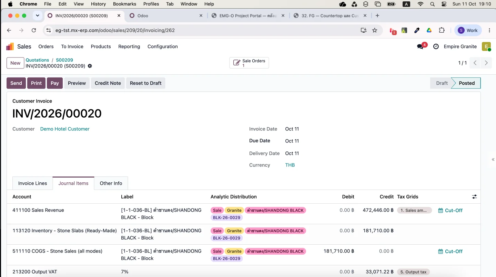 |